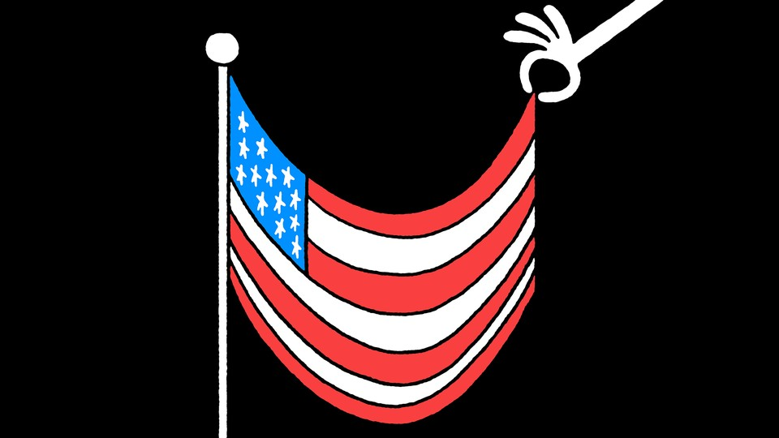

| 上一项 | 文章 | 章节 | 下一项 |
An Ode to America
You’re better than this, sweet land of liberty.
by James Parker

“Pretty good nose you got there! You do much fighting with that nose?”
New Orleans, 1989. I’m standing on a balcony south of the Garden District, and a man—a stranger—is hailing me from the street. He looks like Paul Newman, if Paul Newman were an alcoholic housepainter. I don’t, as it happens, do much fighting with this nose, but that’s not the point. The point is that something about me, the particular young-man way I’m jutting into the world—physically, attitudinally, beak first—is being recognized. The actual contour of me, or so I feel, is being saluted. For the first time.
America, this is personal. I came to you as a cramped and nervous Brit, an overwound piece of English clockwork, and you laid your cities before me. The alcoholic housepainter gave me a job, and it worked out pretty much as you might expect, given that I had never painted houses before and he was an alcoholic. Nonetheless, I was at large. I was in American space. I could feel it spreading away unsteadily on either side of me: raw innocence, potential harm, beckoning peaks, buzzing ions of possibility, and threading through it, in and out of range, fantastic, dry-bones laughter. No safety net anywhere, but rather—if I could only adjust myself to it, if I could be worthy of it—a crackling, sustaining buoyancy.
I blinked, and the baggage of history fell off me. Neurosis rolled down the hill. (It rolled back up later, but that’s another story.) America, it’s true what they say about you—all the good stuff. I’d be allowed to do something here. I’d be encouraged to do something here. It would be demanded of me, in the end, that I do something here.
Later that year I’m in San Francisco, ripping up the carpets in someone’s house. Sweaty work. Fun work, if you don’t have to do it all the time: I love the unzipping sound of a row of carpet tacks popping out of a hardwood floor. On our lunch break, my co-ripper and I gaze at the city skyline, at the rippling spires, the dewy pavilions of San Francisco, and I say something about how good I’m feeling. He turns to me: “Man, you should get paid just for that. They should pay you just for walking around this city with your head up.” Only in America, believe me, do people say things like this.
So listen: Right now your space, your beautiful space, your ungovernable American ether, is going bloody haywire. No denying it. The imagination that big-bangs you into being every morning is … unwell. It’s time to reroute those noble energies of yours, redirect them, with a noise like the drums of Elvin Jones as he explodes behind John Coltrane. Perturbed country, heal yourself ! I know you can. Because in the wildness of your generosity, you once healed me.
This article appears in the January/February 2022 print edition with the headline “Ode to America.”
This article was downloaded by calibre from https://www.theatlantic.com/magazine/archive/2022/01/an-ode-to-america/620854/
| 上一项 | 文章 | 章节 | 下一项 |